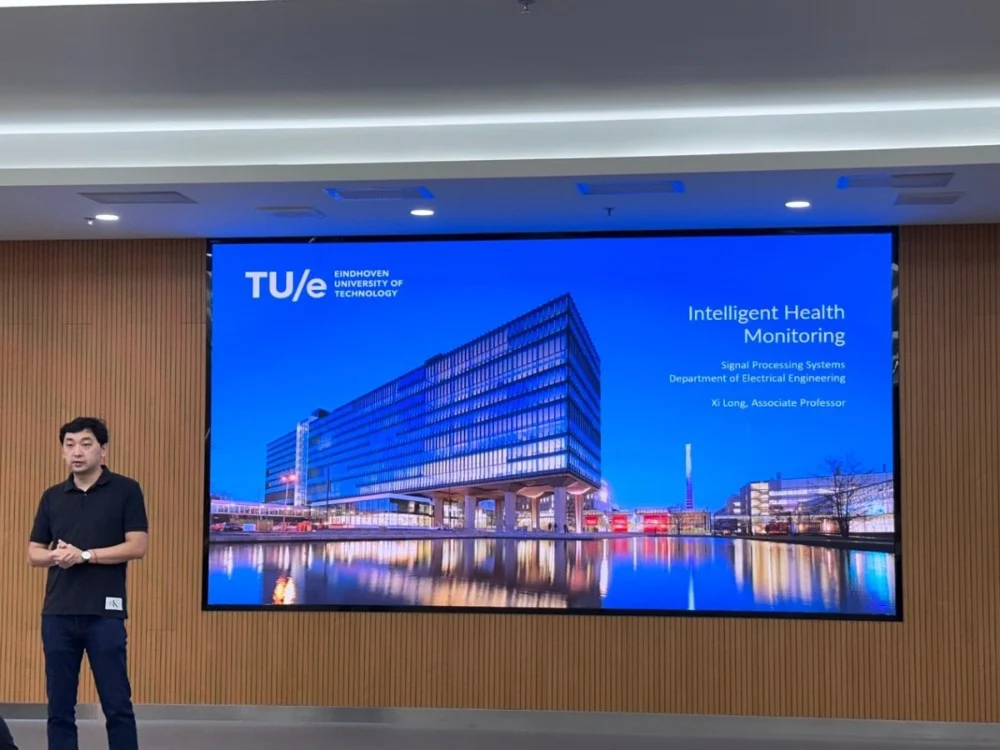
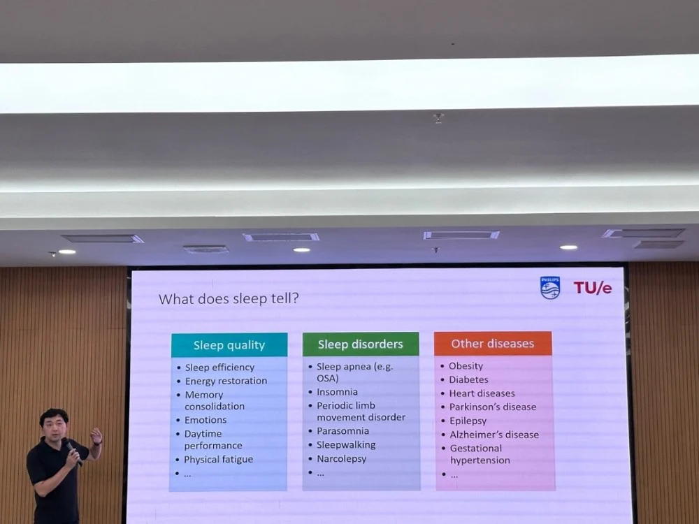
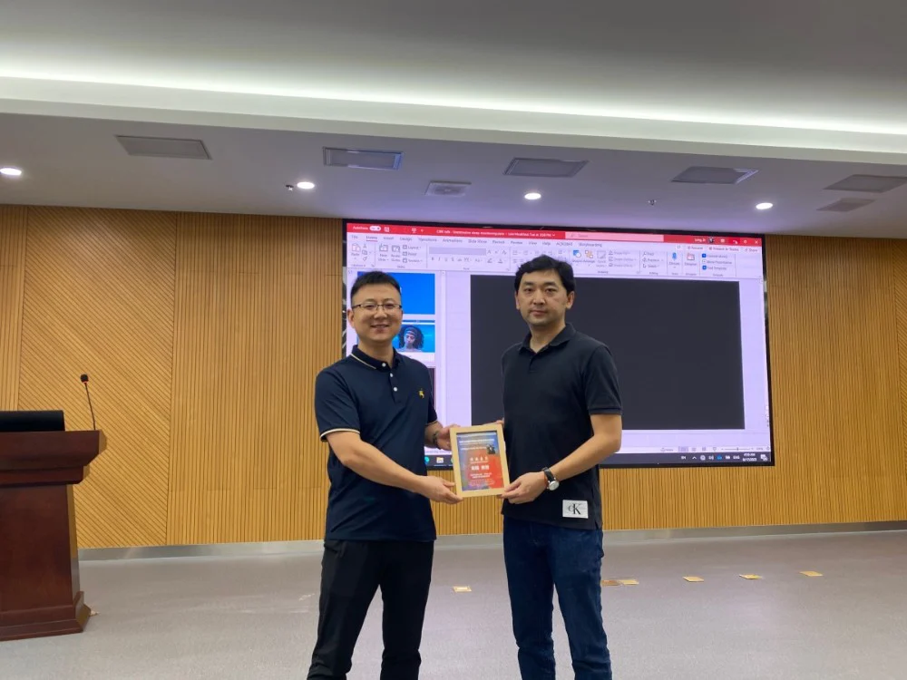

医学图像/眼科影像专题学术分享会----iMED六十二讲
2023年8月17日，荷兰埃因霍恩理工大学医疗技术创新中心管理团队龙曦教授在4009会议室举行了一场关于智能健康监测的演讲。张炯副研究员担任主持人，龙教授详细介绍了他们的最新研究成果。
龙教授于2006年获得浙江大学工学学士学位，并于2009年和2015年以优异成绩分别获得工业大学电气工程硕士和博士学位。随后成为飞利浦研究所的高级科学家和首席研究员，并在TU/e担任兼职助理教授。龙教授一直是许多研究项目的项目负责人或联盟成员，与领先的学术，工业和临床研究所合作，如EU-Horizon, EIT, NWO和e/MTIC。他的研究兴趣包括信号处理和医疗应用的机器学习，如传感、睡眠、围产学、癫痫和神经科学、心脏病学、患者监测和临床决策支持。他发表了120多篇科学论文，创造了近50项飞利浦发明和超过15项专利，是IEEE的高级会员。

龙教授介绍过去在智能健康监测(IHM)方面的研究和价值，包括生理信号、视频/音频数据和健康记录，涵盖了广泛的应用，如睡眠跟踪、新生儿监测、心脏测、癫痫检测和病情恶化预测。首先介绍了智能健康监测，通过可穿戴、无接触式的设备对病人生理信号、病人活动、病人病历进行连续监测，并通过监测系统介入监测病人健康状态和疾病发展。
IHM是一种不断发展的技术，用于在医院或家中跟踪个人的健康状况或疾病，包括使用先进的传感技术和远程保健进行无处不在的健康数据收集，以及利用这些数据预测或检测健康问题的自动算法。人工智能的突破有望实现可靠的疾病检测/预测模型，这是实施IHM的重要支柱。在睡眠健康监测方面，龙教授还详细介绍了睡眠监测通过长期监测病人的睡眠情况并通过算法来分析存在的相关疾病风险，例如通过可穿戴设备（智能手表）完成对病人进行睡眠阶段的数据采集和分析工作、通过音频监测病人的呼吸指标并判断潜在疾病风险。

此外，龙教授还讨论了智能健康监测遇到的挑战，例如算法的可解释性，以及考虑获取针对性非重复的数据并通过算法提取生理信号特征。为达到可靠AI的目标，龙教授讨论了AI不仅需要以数据为中心，还需通过人的介入，例如医疗人员、工程师、算法专家等增强其可靠性，即结合以知识为中心。
会议结束后，听会人员积极提问。首先，郝晋奎博士提出了关于心电脑电，在输入上考虑了几个维度。龙教授解释称，目前考虑了时间和频率两个维度，但是仍需要从具体的问题去考虑，或者是一些非线性、网络上考虑。接着，卢成钢博士提问打鼾的类型如呼吸暂停是如何界定、如何监测的问题。龙教授首先解释打鼾方式的不同，从方向性去分离声音信号等去监测和分析睡眠情况。同时，牟磊博士提出了入睡时间对于健康影响的问题，龙教授解释了不同个体生物钟之间的差异，以及不同地区国家的人工作方式和时间不同，因此需要根据个体情况进行分析。
通过本次讲座，同学们对IHM有了更加深入的了解。iMED将会继续将工程技术与医学相结合，为未来的医学诊断和治疗提供新思路和新方法。
